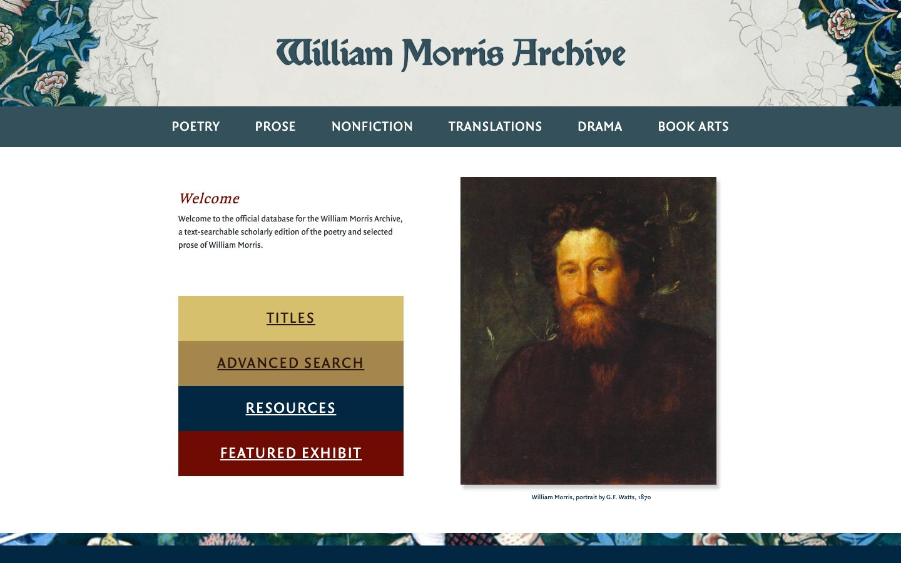

References / Website / 384
William Morris Archive website
The University of Iowa’s edition of Morris’s writings frames its blackletter title with Morris wallpaper and stacks its main links as blocks of dye colour.
- Source
- morrisarchive.lib.uiowa.edu
- Creator
- University of Iowa
- Style
- Arts and Crafts (agent-proposed, not yet reviewed by a person)
- Moods
- Scholarly, medieval, rich
- Evidence
- Captured with
tools/capture.mjs(headless Chrome, 1440 × 900) on 28 September 2026 and inspected. The screenshot shows the first viewport; the measurement covers up to four screens. - Reviewed
- Rights
- Third-party work, stored with credit for commentary. License: unverified. Rights policy
Observed
- The header is pale grey. Cut-outs of a Morris floral pattern in indigo, green, and pink fill its left and right corners.
- “William Morris Archive” is set in a dark slate blackletter.
- A slate-blue bar holds white sans-serif capitals: POETRY, PROSE, NONFICTION, TRANSLATIONS, DRAMA, BOOK ARTS.
- A red italic serif “Welcome” heads a short text in a small sans-serif.
- Four square-cornered blocks stack under it in yellow ochre, brown ochre, dark indigo, and madder red, each with an underlined spaced-capital link.
- A portrait of Morris with a soft shadow sits on the right, and a strip of the same pattern runs along the bottom of the viewport.
Why it belongs
The measurement names the title font “Morris Troy”, a digital revival of the Kelmscott Press’s Troy type.
Measured: two hues, accent chroma 0.40, square corners, no shadows, and an uppercase share of 0.46 from the navigation and the link blocks. The uppercase share is one reason the fingerprint now allows capitals up to 0.5.
Borrow
Stack primary links as flat, square blocks in a dye palette: ochre, brown, indigo, and madder.
Use a pattern as corner or border ornament around a centred blackletter title, and keep the content area plain.
Measured
Machine-extracted by tools/extract-traits.js on . Full measurement.
- Type families
- Quadraat Sans (93%), Morris Troy (5%), QuadraatOT Regular (2%)
- Type scale ratio
- 1.38
- Median radius
- 0 px
- Mean chroma
- 0.08
- Palette
- #ffffff 58%
- #022742 10%
- #212529 9%
- #34515b 7%
- #f2f5f4 5%
- #700b04 4%
- #d7c06d 3%
- #a5864d 3%

